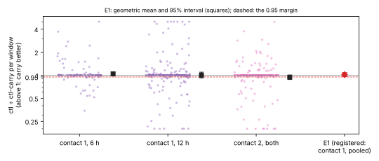
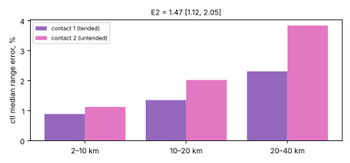
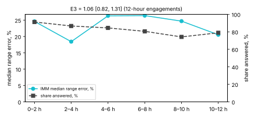

Long engagements: the registered study
2026-11-18 · spec 026 · seeds 349 (tuning), 350 (validation), 351 (test) · gitma2
Registered before the seeds existed
- E1: carry against a cold start, tended contact: non-inferior if the lower limit ≥ 0.95
- E2: untended ÷ tended contact, banded by range: a magnitude
- E3: the IMM over 12 hours, late ÷ early: drift shown if the interval is above 1
60 realistic engagements of 6 and 12 hours on the test seed; a bootstrap over engagements; plan and code bound by digest.
E1: non-inferior by 0.008

1.017 [0.958, 1.082]. Without each chain's first window (carry = ctl there): 1.021 [0.9502, 1.100]. Where the two differ: 1.034 [0.923, 1.168]. At 12 h 1.005 [0.923, 1.096]; untended contact 0.942.
E2: the untended contact, about 1.3–1.5×

On rows where it is held (61%). 2-km sub-bands: 1.34 [1.01, 1.87]. Residual geometry and detection thinning included; mis-association not exercised.
E3: drift not shown, in answered rows

The share answered falls from 0.91 to 0.74–0.79. With unanswered rows counted as failures: 1.26 [0.88, 1.80].
Not achieved
- No accuracy gain from carrying state shown; only a cost saving (31% of the search where it runs)
- E2 and E3 describe this simulator's realism, which is set by hand
- Mis-association is barely exercised; the ownship steers on noisy truth, not on its estimate
Next (the owner's choice)
- Recommended: stop the long-engagement track here as a simulation study; keep ctl-carry as an optional cost measure for tended contacts up to 12 h
- Reopen only with measured realism, an ownship steered by its own track, or association
Write-up: /blog/2026/11/18/long-study · Record: experiments/20261118-ls/ (review.md, supplement.json) · Figures: scripts/research/long_study_charts.py